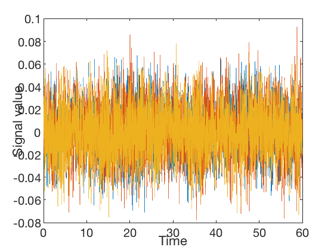

Introduction to orthogonalization
Spatial leakage in the beamformer results in correlations between adjacent/nearby voxels being introduced, that are not the result of correlations in neural activity. As an approximation, this can be corrected for by removing all zero-lag correlations. This does not eliminate correlations in the amplitude envelope, which still provides a meaningful measure of functional connectivity.
To demonstrate orthogonalization in practice, this example illustrates the use of the low-level ROInets function remove_source_leakage() which implements the core orthogonalization algorithms.
First, we generate a synthetic signal and plot it
Fs = 100; %Hz duration = 60; %s time = 0:1.0/Fs:duration; nSamples = length(time); b = fir1(1024, 0.5); nVoxels = 3; [ARfilterTerms, ARnoiseVar] = lpc(b, 7); % Generate data from a covariance matrix and smooth C = [1 -0.1 0.6 -0.1 1 0.3 0.6 0.3 1] * ARnoiseVar; u = chol(C)' * randn(nVoxels, nSamples); data = filter(1, ARfilterTerms, u.').'; figure('Name', 'Input data', 'Color', 'w'); plot(time.', data.'); xlabel('Time') ylabel('Signal value')
Our signal has 3 'voxels' and we will assign each to its own 'parcel'
spatialBasis = eye(3);
Notice that the signal has correlations between channels
corr(data')
ans =
1.0000 -0.0800 0.6117
-0.0800 1.0000 0.3095
0.6117 0.3095 1.0000
The remove_source_leakage() function takes in the data matrix, as well as the orthogonalization method. To apply symmetric orthogonalization, we can simply call:
data_orthog = ROInets.remove_source_leakage(data, 'symmetric');
Now, the channels have no static zero-lag correlation
corr(data_orthog')
ans =
1.0000 -0.0004 0.0003
-0.0004 1.0000 0.0001
0.0003 0.0001 1.0000
However, the amplitude of the orthogonalized signals is quite different to the original signals
std(data') std(data_orthog')
ans =
0.0218 0.0214 0.0220
ans =
0.0129 0.0129 0.0129
The 'closest' orthogonalization method also results in orthogonal signals, but iteratively rotates and scales the basis vectors to best preserve the original signals. As a result, the orthogonalized signals are still uncorrelated, but their amplitudes much better match the original signals
data_orthog_closest = ROInets.remove_source_leakage(data, 'closest');
corr(data_orthog_closest')
std(data_orthog_closest')
ans =
1.0000 -0.0004 0.0003
-0.0004 1.0000 0.0001
0.0003 0.0001 1.0000
ans =
0.0205 0.0210 0.0204